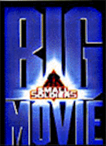
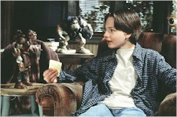
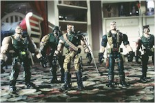
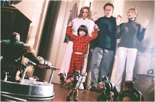

Contents | Features | Reviews | News | Archives | Store |
 |
|
| Movie Credits | Buy It! |
Small Soldiers
Review by Carrie
Gorringe
Posted 10 July 1998
|  | Directed by Joe Dante Starring
Kirsten Dunst, Gregory Smith, And the voices of Frank Langella, Tommy Lee Jones, Screenplay by Gavin Scott, Adam Rifkin, |
Back in 1984, Joe Dante directed Gremlins, the story of an evil genius who knowingly unleashes a potentially dangerous force upon the world. The unintentional conduit for his plans is a young adolescent, alienated from his emotionally and financially fractured family. When strange things begin to happen, no one believes him. Finally, the very town in which he lives is threatened by the evil forces, and he alone must rescue everyone, although his gutsy mother rises to the occasion and joins him in battle. On top of all this, he gets the girl of his dreams.
In 1998, Joe Dante directed Small Soldiers, the story of an evil arms manufacturer named Gil Mars (Leary), who has bought a toy company, and believes he can integrate the two seemingly antinomial businesses into a seamless unit – let’s use the term much beloved by M&A specialists and call his ambitions "synergistic." Desperate to keep his job in the midst of the corporate shakeup, one of the evil arms manufacturer’s minions, Larry Benson (Mohr) co-opts the idea of an associate, and distorts the original concept. In doing so, he creates an us-versus-them apocalyptic scenario, in the form of the Commando Elite. Their leader, Major Chip Hazard (Jones) is, as his rugged name suggests, a daring, take-no-prisoners kind of leader. He wants to kill every last one of the Gorgonites, a peaceful tribe of teratological specimens led by Archer (Langella), a true dogface if ever one existed.
Unfortunately for our would-be Dr. Frankenstein, his creations get the better of him and resort to the usual wreaking of havoc in the usually bucolic hamlet of Winslow Corners, Ohio. Alan Abernathy (Smith) is the gangly, misunderstood adolescent, running over with a past involving bomb threats, angry parents, and a present consumed with unrequited love for the local teenage goddess, Christy Fimple (Dunst), who dates only older men (defined loosely as any hunky male over the age of sixteen and is the captain of the football team). Desperate to assist the bottom line in his father’s failing toy shop, Alan accesses some of these mad toys and the next-day result is a shop that looks like the beaches of Normandy on June 7. Of course, the martial toys don’t stop there and use the shop as a launching pad for their genocidal operations. During this mad quest, the families of the two teenagers and their families come under siege, and our hero has to rescue everyone, with able assistance from his gutsy mother (Magnuson) and her mean forehand. Under the circumstances, would it be impolitic to suggest that there is a narrative commonality at work between the two films?
Aside from the inescapable conclusion that Small Soldiers is, from the perspective of characterization and plot, barely discernible from Dante’s earlier film, there is something rather disturbing about the prospect of requiring four scriptwriters and tons of expensive, masterfully-executed special effects (courtesy of Industrial Light & Magic) to produce a nominal improvement over the original. Moreover, having been beaten to the visual punch by Toy Story, Small Soldiers cannot even claim any originality in that department. To call one a rip-off of the other on this level, however, is unfair, because the technology employed in Small Soldiers is, as one expects from George Lucas’s shop, groundbreaking. ILM has managed to combine both computer-generated imagery and the use of models in such a way that the transitions between the two are truly seamless. It’s a real breakthrough for animation, but its use here suggests a bleak continuation of Hollywood’s current trend toward flawless special effects grafted onto grotesquely inferior product. Under the right circumstances (and that disclaimer envelops only the most narrowly-defined of criteria), there’s nothing wrong with remaking a film in theory. However, if the only work that a director can choose to recreate comes from his own repertoire and one which was an appalling mess, at that, then one has to ask just what the minds in charge are thinking as they palm off recycled mediocrities on the public. Let’s not ask how stupid they think the movie-going public is; we really don’t want to know.
If anything other than the participation of ILM distinguishes Dante’s quasi-remake, it is the cast. Small Soldiers boasts an excellent cast. Jones has his Patton-like persona down pat; he’s as scary-funny as you might expect a hyperactive soldier with a Napoleonic complex to be, and is ably assisted by his fellow voices Borgnine, Brown (both of whom, by the way, lent more than their voices to Robert Aldrich’s WW II film, The Dirty Dozen, and Dante and Co. use that knowledge as part of the irony that saturates the script), Dern, Kennedy and Walker. Langella, Guest, McKean and Shearer are the match of their Commando foes; As Gorgonites, they are both humorous and not so noble that they are chronically insufferable. Smith and Dunst wring far more depth from their roles than might be thought possible. As for the late Phil Hartman, his performance as the obnoxious, gadget-obsessed neighbor and parent comes up to his usual high standards, but, sadly, this was not the star-making role that so many in Hollywood thought it would be; everyone in this film has to take a back seat to the real stars, and how can flesh and blood be expected to compete on equal terms with digital imagery?
Nevertheless, with its magnificent special effects – not to mention the almost endless array of corporate tie-ins – Small Soldiers will, no doubt, be making a lot of other small soldiers yell at their parents to "Fall in!" -- to fall into long lines outside movie theatres, that is.
Contents | Features | Reviews | News | Archives | Store
Copyright © 1999 by Nitrate Productions, Inc. All Rights Reserved.